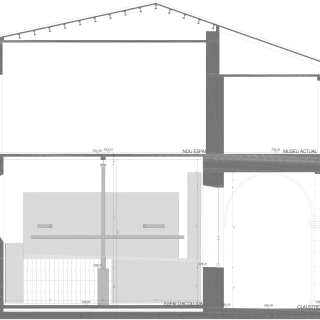

JAUME SOLDEVILA
ESTUDI D'ARQUITECTURA
OBRES
Montserrat
Capella del Roser
Mas de Sant Iscle
Cal Petit Enric
La Coma i la Pedra
Salelles
ADMINISTRACIÓ
Plaça Simeó Selga
Col·legi de Sant Ignasi de Loiola
Pista del Castell de Puigterrà
Façana Sud
Pou de la Gallina
Rampa del Mestre Albagés
PROJECTES
Montalegre
Cal Cot
Glam càmping
Passatge Mión
Casa Ametllers
Santa Joaquima
Serrat de Castellnou
Bany Sant Fruitós
Puigterrà de Dalt
Celler de Sallent
Campanar de Sant Martí
Pou de Llum
+MÉS
L'Estudi
Mitjans
Concursos

ADMINISTRACIÓ PÚBLICA
Plaça Simeó Selga
Col·legi de Sant Ignasi de Loiola
Pista del Castell de Puigterrà
Façana Sud
Pou de la Gallina
Rampa del Mestre Albagés